Процедурный Surface: обе сетки и формы Seed42. Явные повторяемые карточки биомов с процентами от суши. Канал «Биомы» использует реальные первичные ID и переходы; серые карты показывают высоты. Изображения — результат существующего общего PNG-экспорта, без художественной обработки.
landscape · land · 50×50 · biome 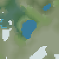
landscape · coast · 50×50 · biome 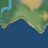
landscape · islands · 50×50 · biome 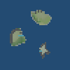
landscape · continent · 50×50 · biome 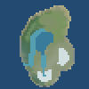
landscape · land · 100×100 · elevation 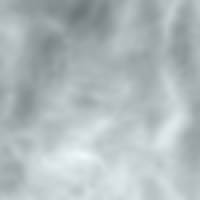
landscape · land · 300×300 · biome 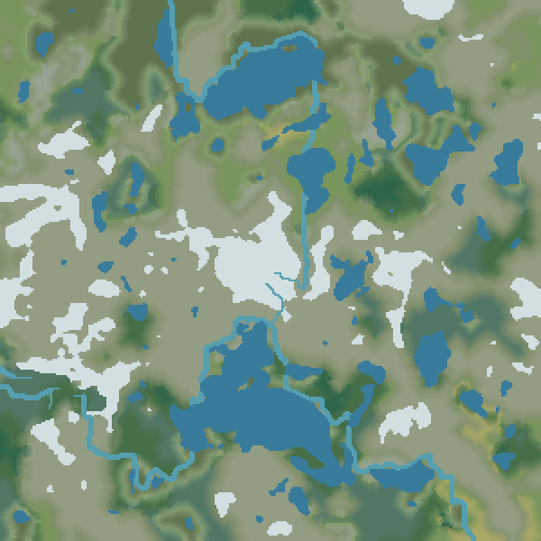
landscape · coast · 300×300 · biome 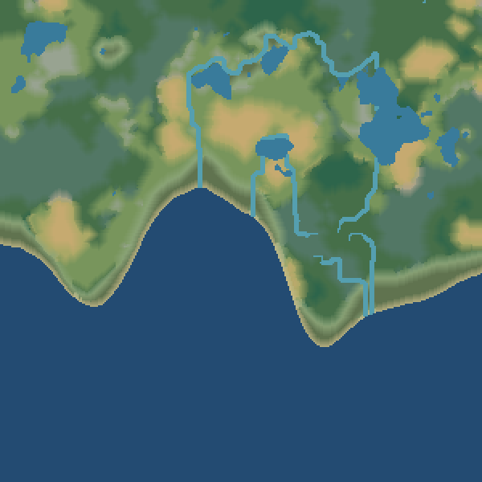
landscape · islands · 300×300 · biome 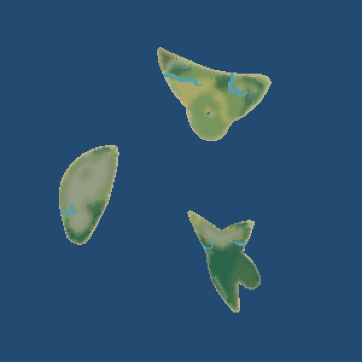
landscape · continent · 300×300 · biome 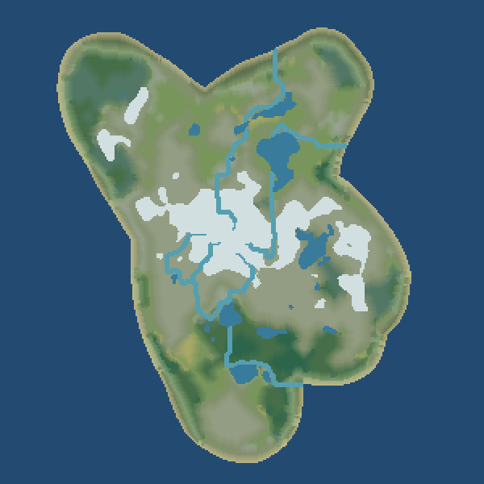
hexlandscape · land · 50×50 · biome 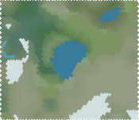
hexlandscape · coast · 50×50 · biome 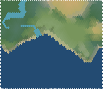
hexlandscape · islands · 50×50 · biome 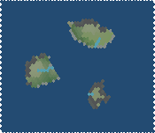
hexlandscape · continent · 50×50 · biome 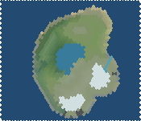
hexlandscape · land · 100×100 · elevation 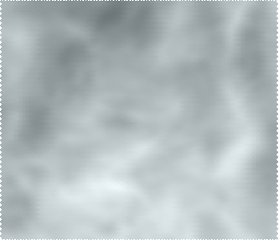
hexlandscape · land · 300×300 · biome 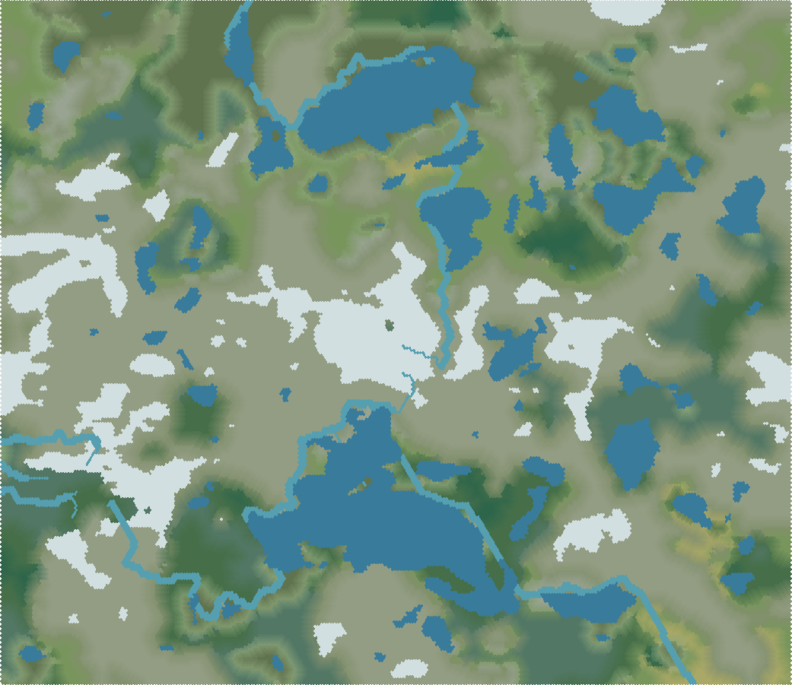
hexlandscape · coast · 300×300 · biome 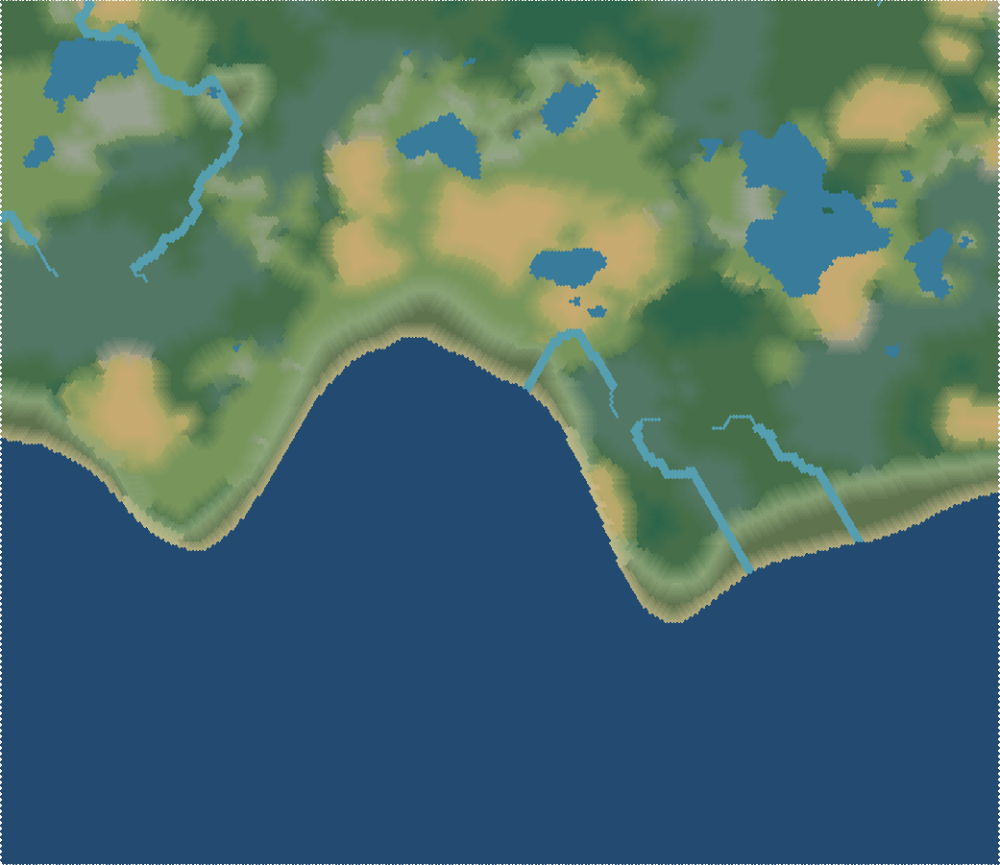
hexlandscape · islands · 300×300 · biome 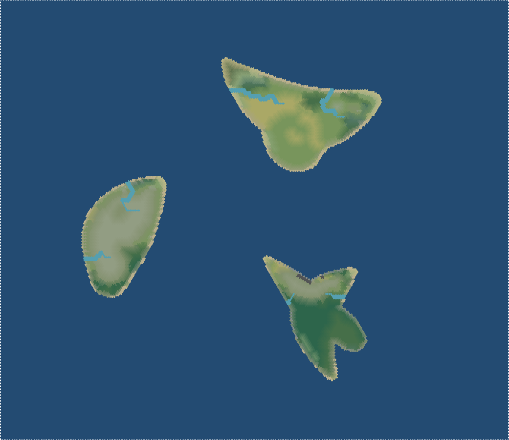
hexlandscape · continent · 300×300 · biome 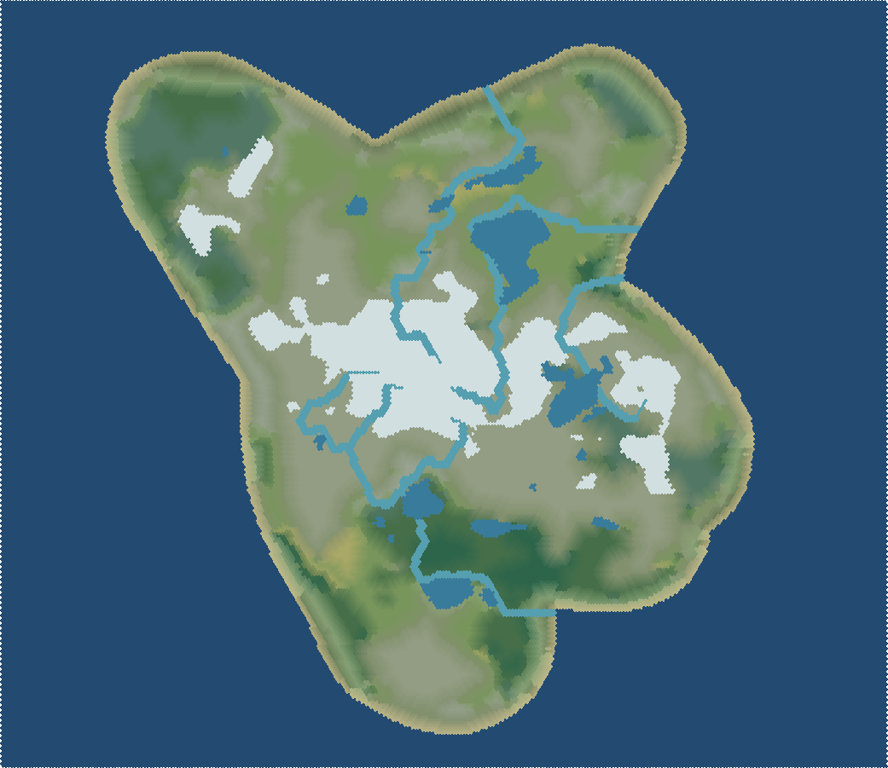